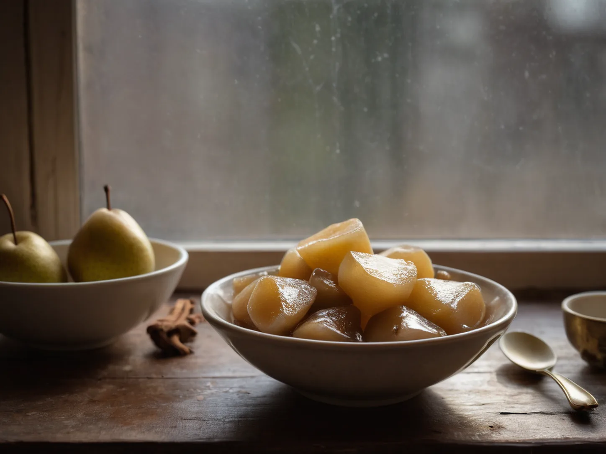

A Rock Sugar Pear, Remembered in Every Home
A rock sugar pear carries different household stories, where the remembered version matters more than any single set of kitchen instructions.

A bowl without one version
Ask three relatives about a pear with rock sugar and the details soon divide. One remembers the skin left on, another remembers a small lid cut from the top, and a third remembers only a pale bowl carried into a dark room. The name stays familiar while the household picture shifts around it. The disagreement is gentle because no one is trying to recover a standard, only the person and room attached to it.
That variation is the point of the record. A pear, a sweet crystal, a pot, and a remembered occasion can travel together without becoming one exact family formula. What survives most clearly is often the gesture of someone setting a bowl down and waiting nearby, not a list written on paper. A phrase repeated through a family can stay stable even while the people, rooms, and utensils inside the story change.
What each kitchen kept
In northern homes, people may recall whether the fruit was peeled; in other homes, the story turns on an added dried ingredient, a covered bowl, or the time of day when it appeared. These differences are oral landmarks, not evidence that one version outranks another. The same phrase can hold several local habits at once. A dried fruit named in one account may be absent from another, and that absence is part of the history as well.
Snow Pear Water in the Night Kitchen follows one grandmother, one small pot, and one child awake upstairs. Salt Baked Orange at the Neighbor's Door arrives from another household and another winter doorway. Scallion White in the Early-Cold Kitchen likewise preserves a kitchen response as a scene, rather than turning it into a general rule.
The story beside the bowl
Some people remember the sugar as clear and some as amber; some remember the bowl as porcelain and some as enamel. The differences do not need to be corrected away. They show how a familiar kitchen object can collect the accents of a family, a district, and a particular year. Each retelling fixes attention on a different detail at home, such as the kitchen light, a particular voice, or the bowl's weight.
This page gives no amounts, sequence, or claim about what a bowl should do. Persistent or worrying symptoms belong with an appropriate health professional, not with a reconstructed household recollection. Here the pear remains a record of voices: each home holding its own version, and none required to settle the others.